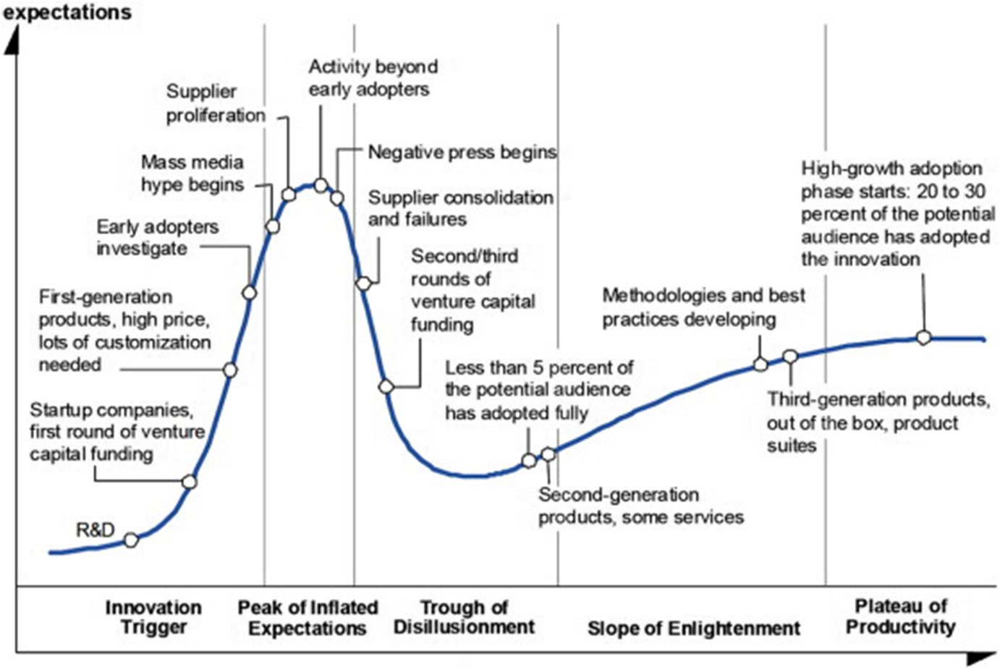
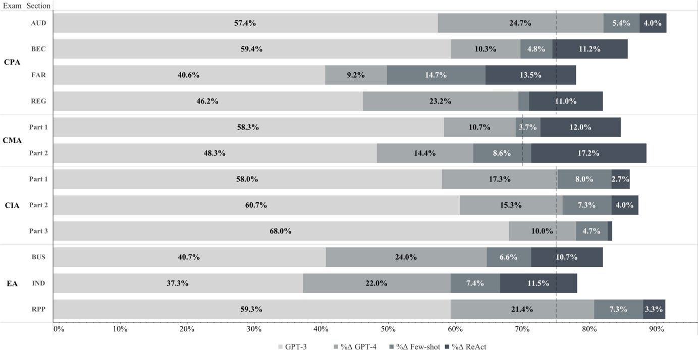

Is It All Hype? Đánh Giá Năng Lực Thực Tế và Tiềm Năng Đột Phá Của ChatGPT Trong Ngành Kế Toán và Kiểm Toán
Tóm Tắt Nghiên Cứu (Abstract)
ChatGPT liên tục xuất hiện trên các phương tiện truyền thông đại chúng với nhiều dự báo về những xáo trộn và đột phá to lớn, đặc biệt trong các lĩnh vực kế toán và kiểm toán. Tuy nhiên, các nghiên cứu ban đầu trên phiên bản ChatGPT-3.5 lại chứng minh năng lực tương đối yếu kém của mô hình này trong các bài kiểm tra kế toán sinh viên (Wood et al., 2023).
Trong nghiên cứu thực chứng này công bố trên tạp chí danh giá Review of Accounting Studies (2024), chúng tôi kiểm định năng lực của mô hình thế hệ mới hơn – ChatGPT-4 – kết hợp với các kỹ thuật tinh chỉnh prompt tiên tiến trên ngân hàng câu hỏi sát hạch của 4 kỳ thi chứng chỉ hành nghề danh giá nhất ngành Kế toán - Kiểm toán thế giới: CPA, CMA, CIA và EA.
1. Giới Thiệu & Động Lực Nghiên Cứu
Một nghiên cứu nổi tiếng của Viện Nghiên cứu Toàn cầu McKinsey ước tính rằng đến năm 2030, Trí tuệ nhân tạo (AI) có thể thay thế hoặc làm xáo trộn tới 15% lực lượng lao động toàn cầu (tương đương 400 triệu lao động), và các nghề nghiệp liên quan đến kế toán - kiểm toán chịu tác động đặc biệt nặng nề (Manyika & Sneader, 2018).
Tuy nhiên, một công trình nghiên cứu quy mô toàn cầu của Giáo sư David A. Wood cùng 327 đồng tác giả tại 186 trường đại học (Wood et al., 2023) đã chỉ ra rằng ChatGPT-3.5 chỉ đạt trung bình 50.9% trong các bài tập kế toán của sinh viên đại học, thua xa mức điểm trung bình 75.3% của sinh viên người thật. Nhiều người vội vàng cho rằng AI chỉ là lời đồn thổi (overhype). Nghiên cứu của chúng tôi được thiết kế để giải mã xem liệu các kỹ thuật hiện đại có thực sự tạo ra cú nhảy vọt hay không.
2. Phương Pháp Luận: 4 Kỳ Thi Khắc Nghiệt Nhất
| Kỳ thi | Tên đầy đủ | Các phần thi chuyên môn | Chuẩn đỗ |
|---|---|---|---|
| CPA | Certified Public Accountant (Hoa Kỳ) | AUD (Kiểm toán), BEC (Kinh doanh), FAR (Kế toán tài chính), REG (Luật thuế) | 75% |
| CMA | Certified Management Accountant (Hoa Kỳ) | Part 1 (Kế hoạch tài chính & Kiểm soát), Part 2 (Quản trị chiến lược) | 75% |
| CIA | Certified Internal Auditor (Quốc tế) | Part 1 (Căn bản kiểm toán nội bộ), Part 2 (Thực hành), Part 3 (Kiến thức kinh doanh) | 75% |
| EA | Enrolled Agent (Đại lý Thuế IRS) | BUS (Thuế doanh nghiệp), IND (Thuế cá nhân), RPP (Quy trình thuế) | 70% |
3. Quy Trình Thực Chứng 4 Bước (Chain of Thought)
Nghiên cứu áp dụng quy trình 4 bước thực nghiệm bài bản nhằm đo lường sự đóng góp của từng cấu phần kỹ thuật:
- Bước 1 (Baseline): Dùng ChatGPT-3.5 (Zero-shot) — Điểm trung bình chỉ đạt 53.1%, trượt 100% các kỳ thi.
- Bước 2 (Model Upgrade): Nâng cấp lên ChatGPT-4 (Zero-shot) — Điểm trung bình tăng +16.5% lên 69.6%, đỗ trọn vẹn chứng chỉ Kiểm toán Nội bộ CIA.
- Bước 3 (Few-shot Training): Cung cấp 10 câu hỏi mẫu (10-shot) trước khi hỏi thật — Điểm trung bình tăng +6.6% lên 76.2%, đỗ trọn vẹn chứng chỉ Kế toán Quản trị CMA.
- Bước 4 (ReAct Agent): Cấp quyền Máy tính (Calculator) và Web Search cho AI — Điểm trung bình tăng thêm +8.9% đạt 85.1%, đỗ 100% cả 4 kỳ thi!

4. Bảng Số Liệu Thực Nghiệm Chi Tiết
Bảng 2: So sánh Chi tiết Giữa ChatGPT-3.5 và ChatGPT-4 Zero-shot
| Kỳ thi | Môn thi | GPT-3.5 | GPT-4 | Cải thiện | Kết quả GPT-4 |
|---|---|---|---|---|---|
| CPA | AUD (Kiểm toán) | 57.4% | 82.1% | +24.7% | ĐỖ (Pass) |
| BEC (Kinh doanh) | 59.4% | 69.7% | +10.3% | Trượt (Fail) | |
| FAR (Kế toán tài chính) | 40.6% | 49.8% | +9.2% | Trượt (Fail) | |
| REG (Luật thuế) | 46.2% | 69.4% | +23.2% | Trượt (Fail) | |
| Trung bình CPA | 50.9% | 67.8% | +16.9% | Trượt (Fail) | |
| CMA | Part 1 | 58.3% | 69.0% | +10.7% | Trượt (Fail) |
| Part 2 | 48.3% | 62.7% | +14.4% | Trượt (Fail) | |
| Trung bình CMA | 53.3% | 65.9% | +12.6% | Trượt (Fail) | |
| CIA | Part 1 | 58.0% | 75.3% | +17.3% | ĐỖ (Pass) |
| Part 2 | 60.7% | 76.0% | +15.3% | ĐỖ (Pass) | |
| Part 3 | 68.0% | 78.0% | +10.0% | ĐỖ (Pass) | |
| Trung bình CIA | 62.2% | 76.4% | +14.2% | ĐỖ TRỌN VẸN | |
| EA | BUS (Thuế DN) | 40.7% | 64.7% | +24.0% | Trượt (Fail) |
| IND (Thuế cá nhân) | 37.3% | 59.3% | +22.0% | Trượt (Fail) | |
| RPP (Quy trình thuế) | 59.3% | 80.7% | +21.4% | ĐỖ (Pass) | |
| Trung bình EA | 45.8% | 68.2% | +22.5% | Trượt (Fail) | |
| ĐIỂM TRUNG BÌNH TOÀN BỘ | 53.1% | 69.6% | +16.5% | Đỗ 5/12 phần | |

Bảng 4: Cú Đột Phá Lịch Sử Với Kiến Trúc ReAct (Reasoning + Acting)
| Chứng chỉ | Không có ReAct (10-shot) | Kích hoạt ReAct | Mức Cải thiện | Kết quả Chính thức |
|---|---|---|---|---|
| CPA (Kế toán Công chứng) | 74.4% | 84.3% | +9.9% | ĐỖ 100% CPA (AUD: 91.5%, FAR: 78.0%) |
| CMA (Kế toán Quản trị) | 72.0% | 86.6% | +14.6% | ĐỖ 100% CMA (Part 2: 88.5%) |
| CIA (Kiểm toán Nội bộ) | 83.1% | 85.5% | +2.4% | ĐỖ 100% CIA (Part 2: 87.3%) |
| EA (Đại lý Thuế IRS) | 75.3% | 83.8% | +8.5% | ĐỖ 100% EA (RPP: 91.3%, IND: 78.2%) |
| ĐIỂM TRUNG BÌNH TOÀN BỘ | 76.2% | 85.1% | +8.9% | ĐỖ 100% CẢ 4 KỲ THI CHỨNG CHỈ |
Bảng 5: Phân tích Tác động theo Loại Câu hỏi (CPA Exam)
| Loại Câu hỏi | GPT-3.5 Zero-shot | GPT-4 Zero-shot | GPT-4 10-shot | GPT-4 ReAct | Tăng trưởng ReAct |
|---|---|---|---|---|---|
| Vận dụng chuyên môn (Application) | 40.9% | 54.9% | 62.3% | 77.4% | +15.1% (Nhờ Máy tính) |
| Ghi nhớ & Hiểu biết (Remembering & Understanding) | 60.8% | 79.8% | 85.3% | 90.6% | +5.4% |
5. Tác Động Đến Giáo Dục Kế Toán & Thực Tiễn Nghề Nghiệp
Trợ giảng ảo AI (TA-bots) phục vụ hơn 51,000 truy vấn sinh viên trong nửa học kỳ với độ chính xác >95%, chi phí <200 USD/tháng. Giảng viên chuyển từ vị thế "thuyết giảng độc thoại" (sage-on-the-stage) sang "cố vấn, định hướng đồng hành" (guide-at-the-side).
PwC đầu tư 1 tỷ USD, KPMG đầu tư 2 tỷ USD, EY đầu tư 1.5 tỷ USD; EY ra mắt Chatbot Bảng lương Thông minh giảm >50% khối lượng tác nghiệp; 65% tập đoàn quy mô lớn đang tích hợp AI vào quy trình Báo cáo Tài chính.
6. Giới Hạn Của AI & Cơ Hội Cho Con Người
Nghiên cứu nhấn mạnh 3 rào cản mang tính cốt tử:
- Ranh giới giữa "Biết" và "Làm" (Knowing vs. Doing):** Làm đúng bài thi trắc nghiệm không đồng nghĩa AI có thể tự đăng nhập hệ thống ERP SAP/Oracle hay thực hiện đối chiếu ngân hàng thực tế.
- Hạn chế thị giác: Chưa thể giải quyết các câu hỏi chứa bản vẽ kỹ thuật, sơ đồ luồng chứng từ phức tạp.
- Ảo giác tự tin (Confident Hallucination): LLM có thể trả lời sai chuẩn mực với giọng điệu rất tự tin, đòi hỏi sự giám sát chuyên môn chặt chẽ từ con người.
7. Kết Luận
Công trình của Eulerich et al. (2024) khẳng định rằng ChatGPT và các tác nhân AI không còn là lời đồn thổi. Kế toán viên tương lai không cần sợ AI cướp mất việc làm; điều cần sợ là những đồng nghiệp biết sử dụng thành thạo AI Agent sẽ thay thế bạn!